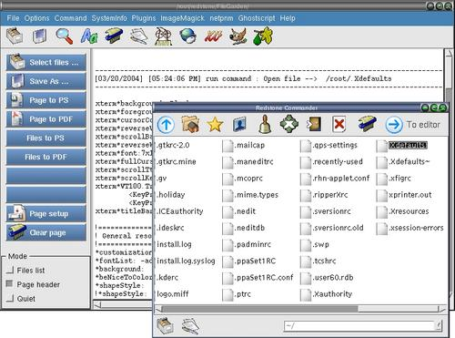

Convert page to postscript

Step 1 : Click "Select files ..." button to open a open-file dialog.
Step 2 : Double click on a file to display on the editor page.
Step 3 : Click "Page to postscript" button to open a save-file dialog.
Step 4 : Save it to a new postscript file.
File mode : Make sure "File list" mode is unchecked.
note : The current directory of the xfgcommander is the current
directory of the saving location for all files saved.They will be highlighted
after you close a dialog or executed a menu command.